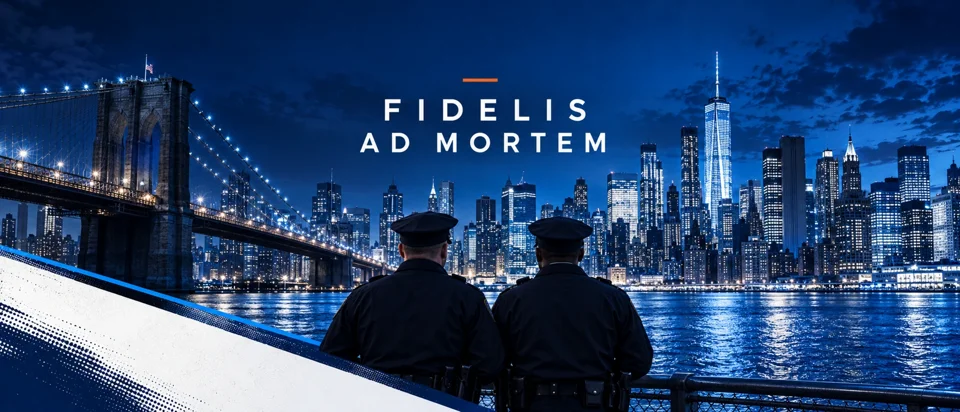
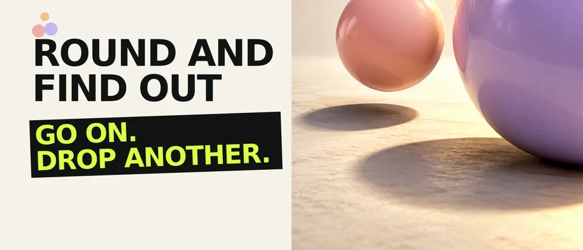
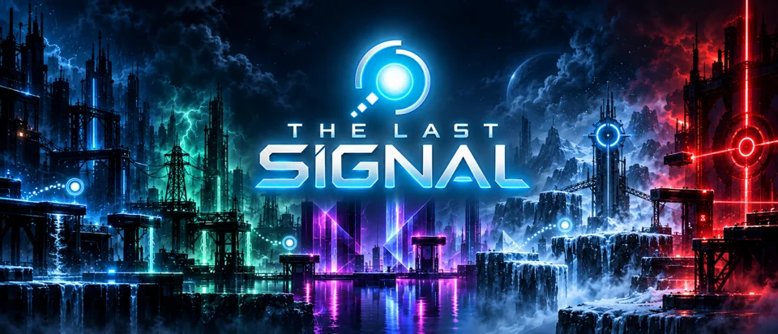
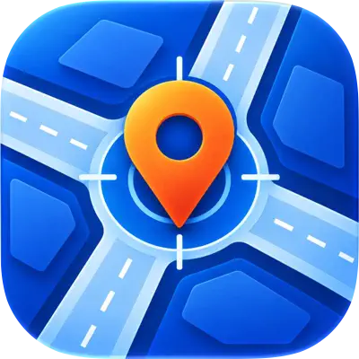

A LITTLE MORE CLARITY
Summons Partner
Reference, scheduling and overtime tools for law-enforcement professionals. Complex information, considered carefully.
You bring the possibility.
We give it a distinctive identity, an intuitive interface,
and a thoughtful place in the world.
Every idea begins with a person. A need, an ambition, a different way of seeing things. We listen for what makes yours worth bringing to life.
Then we connect a distinctive visual identity with an interface that feels natural. Design that invites people in. Technology that gets out of their way. An experience that feels unmistakably yours.
Our measure is human: how clearly something communicates, how easily it works, and how it makes someone feel.
Sometimes it’s the pleasure of a perfect move.
Sometimes it’s clarity when you need it.
Our games and apps explore both.
Make connections. See what happens next.
Submitted for App Review
Drop an orb. Merge a match. Find out.
In development
A world of light. A matter of strategy.
Submitted for App Review
Reference, scheduling and overtime tools for law-enforcement professionals. Complex information, considered carefully.

Current address, nearby intersection and coordinates at a glance. Designed around the moments when clarity matters.
Explore the appA considered selection of client work,
from e-commerce and film
to being found through search.
One thoughtful direction, from your first idea to the details people remember. Choose a discipline to explore how we can help.
An idea deserves more than a beautiful screen. It deserves a clear journey: from the first impression to the moment someone finds what they need.
We bring visual design and development together, shaping the structure, navigation and small interactions around real people. From a company website to an e-commerce experience or mobile app, every decision should make the next step feel natural.
A strong identity makes a business recognizable before it has said a word. We find the visual character that belongs to your idea, then give it a consistent language.
A logo is only the beginning. Typography, color, imagery and tone work together across screens, packaging and printed materials, so every encounter feels like the same considered brand.
Being seen matters. Being understood matters more. We connect the story your business wants to tell with the questions and interests of the people you want to reach.
Our work spans video production, purposeful content and search optimization. We consider page structure, on-page content and technical search foundations alongside campaign creative, keeping the message clear and the experience useful.
Sometimes the most useful first step is a better question. Who is this for? What do they need? What should feel easier, clearer or more memorable?
We help turn an open-ended ambition into a focused direction. By looking at your existing experience, priorities and practical constraints, we can shape a sensible path from early concept to launch and continued improvement.
Elevated by design.
Grounded in people.
A clear vision or a possibility taking shape.
Let’s find what makes it yours.